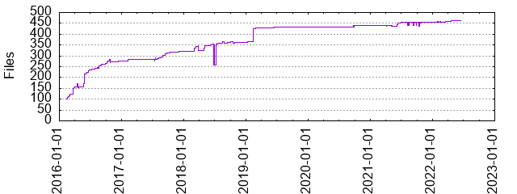

Files
- Total files
- 461
- Total lines
- 61820
- Average file size
- 12458.73 bytes

| Extension | Files (%) | Lines (%) | Lines/file |
|---|
| 26 (5.64%) | 1177 (1.90%) | 45 |
| BUILD | 13 (2.82%) | 1380 (2.23%) | 106 |
| WORKSPACE | 1 (0.22%) | 17 (0.03%) | 17 |
| bzl | 6 (1.30%) | 1465 (2.37%) | 244 |
| c | 1 (0.22%) | 135 (0.22%) | 135 |
| cc | 1 (0.22%) | 17 (0.03%) | 17 |
| h | 2 (0.43%) | 40 (0.06%) | 20 |
| html | 9 (1.95%) | 308 (0.50%) | 34 |
| ico | 1 (0.22%) | 16 (0.03%) | 16 |
| json | 22 (4.77%) | 550 (0.89%) | 25 |
| m | 1 (0.22%) | 23 (0.04%) | 23 |
| md | 8 (1.74%) | 772 (1.25%) | 96 |
| pbxproj | 15 (3.25%) | 15063 (24.37%) | 1004 |
| plist | 34 (7.38%) | 1171 (1.89%) | 34 |
| png | 38 (8.24%) | 10292 (16.65%) | 270 |
| py | 18 (3.90%) | 3382 (5.47%) | 187 |
| scss | 6 (1.30%) | 397 (0.64%) | 66 |
| sh | 10 (2.17%) | 496 (0.80%) | 49 |
| storyboard | 6 (1.30%) | 2033 (3.29%) | 338 |
| strings | 3 (0.65%) | 357 (0.58%) | 119 |
| swift | 136 (29.50%) | 28678 (46.39%) | 210 |
| template | 1 (0.22%) | 141 (0.23%) | 141 |
| tulsiconf | 2 (0.43%) | 39 (0.06%) | 19 |
| tulsigen | 2 (0.43%) | 93 (0.15%) | 46 |
| xcscheme | 62 (13.45%) | 2791 (4.51%) | 45 |
| xcsettings | 26 (5.64%) | 312 (0.50%) | 12 |
| xib | 7 (1.52%) | 774 (1.25%) | 110 |
| yml | 4 (0.87%) | 121 (0.20%) | 30 |